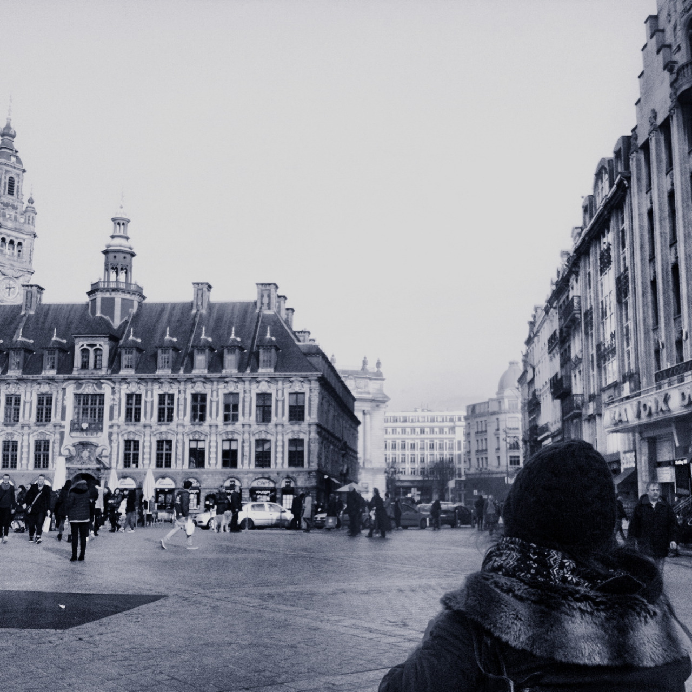
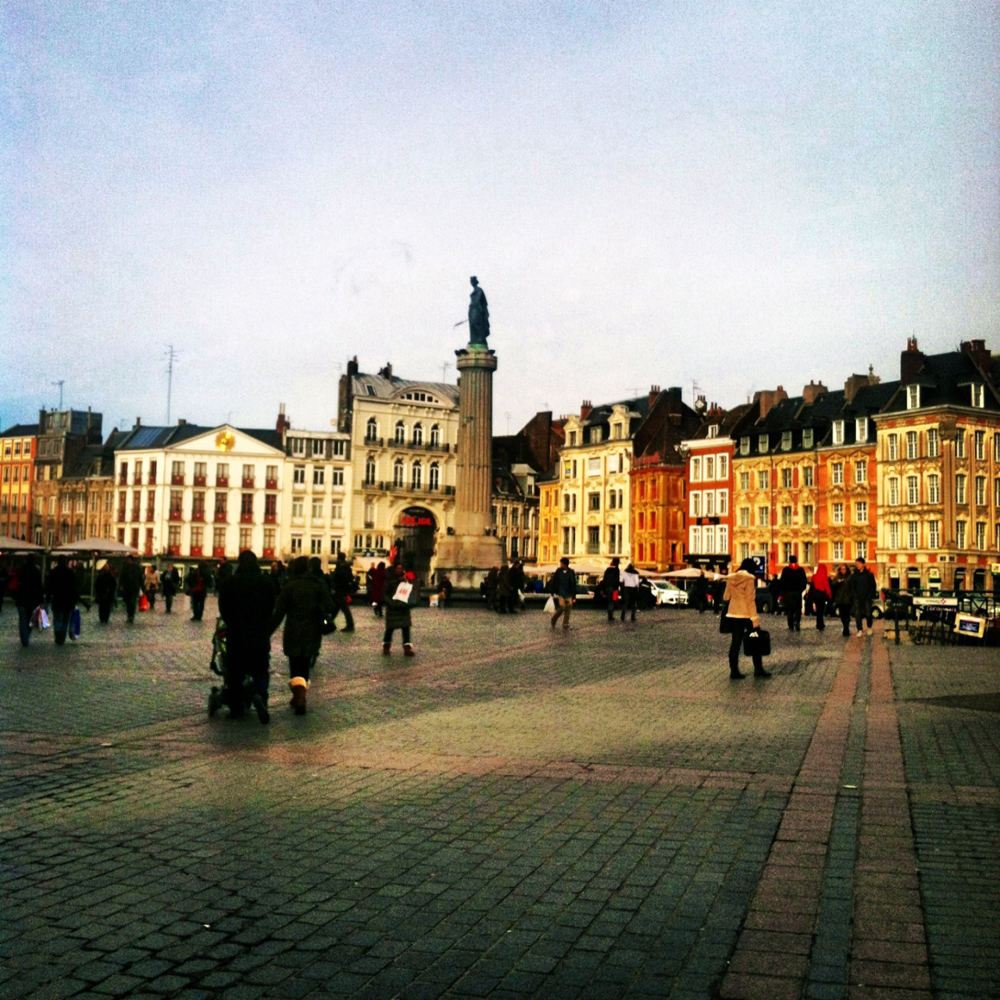

For as long as I can remember, I have been travelling to France. It has always felt like a home away from home to me, and is probably why I have such a fondness for traveling. Ironically (or maybe appropriately), it always seems that the places you have the most affection for, are the ones you have the least pictures of. So here is my sad attempt to include some pictures of one of my favorite places. Images include: La place du Général-de-Gaulle (Lille).
 